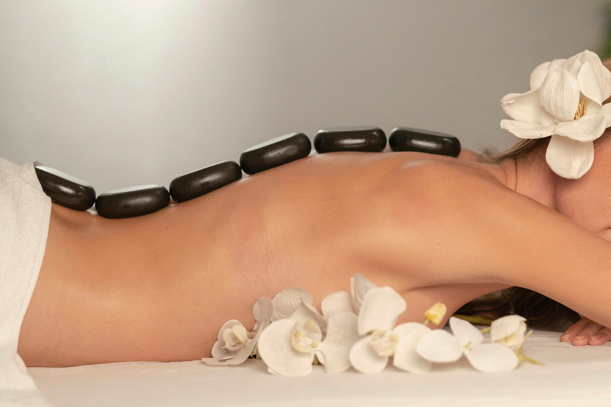

Where balance
meets intention.
A registered massage therapy and wellness centre built on a simple idea — that genuine, individualized care is the foundation of lasting recovery.
Healing that goes
beyond symptoms.
Our philosophy is shaped by the experiences that brought us here — rooted in genuine care for people and a strong commitment to supporting recovery in a meaningful, individualized way.
We believe effective healing involves understanding each person's unique needs, providing compassionate, evidence-informed care, and working together toward long-term well-being.
Where balance becomes the
foundation of well-being.
How we practice.
“You are not just a patient, but a valued individual on a path to recovery.”
A note from the practice

Evidence-based,
patient-first.
At Isorropia, our commitment lies in the delivery of evidence-based techniques and treatment focused on optimizing patient wellness and supporting physiological recovery.
We strive to create a therapeutic environment that promotes the attainment of physical and psychological homeostasis for each individual — the balance from which the practice takes its name.